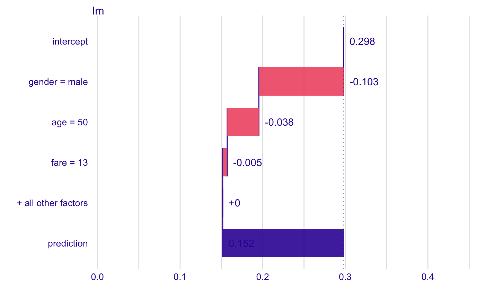
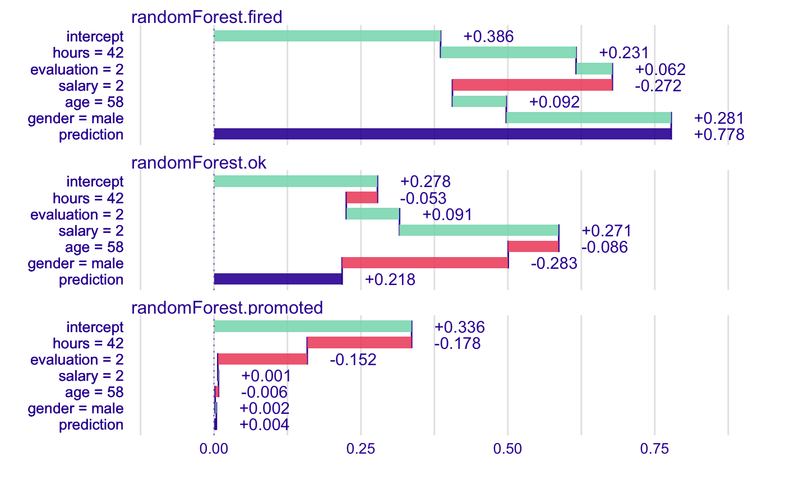
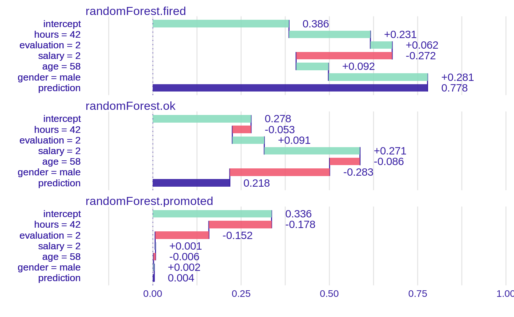
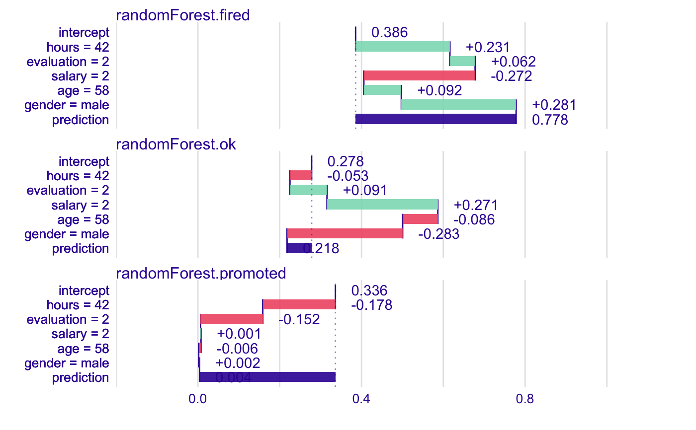
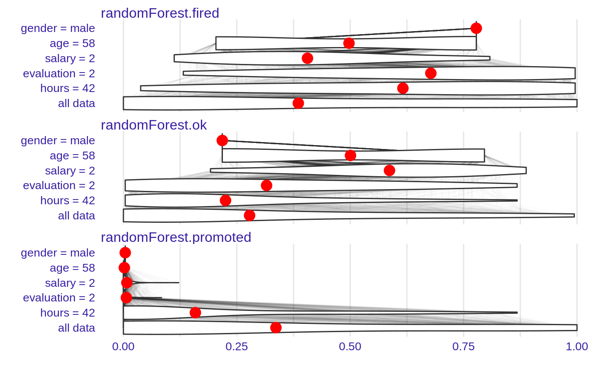
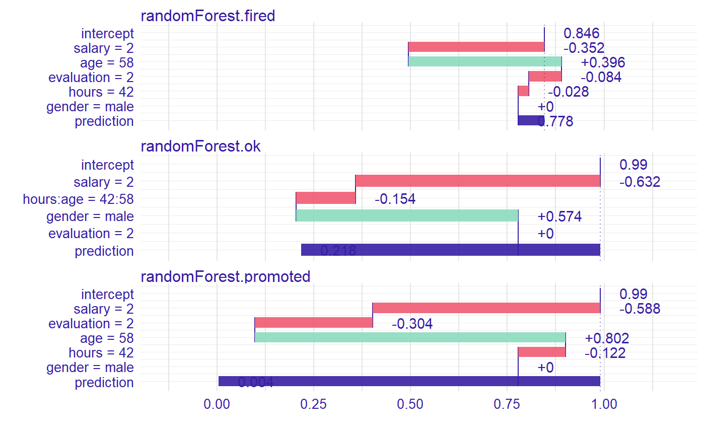
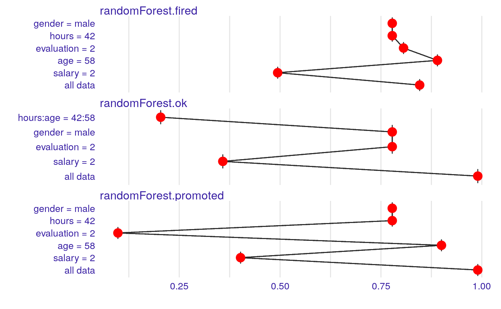
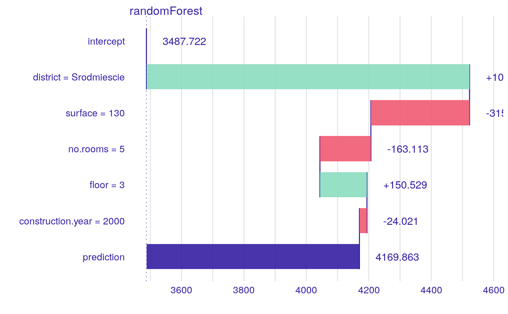

Plot Generic for Break Down Objects
Plot Generic for Break Down Objects
# S3 method for break_down plot(x, ..., baseline = NA, max_features = 10, min_max = NA, vcolors = DALEX::theme_drwhy_colors_break_down(), digits = 3, rounding_function = round, add_contributions = TRUE, shift_contributions = 0.05, plot_distributions = FALSE)
Arguments
| x | the model model of `break_down` class. |
|---|---|
| ... | other parameters. |
| baseline | if numeric then veritical line starts in `baseline`. |
| max_features | maximal number of features to be included in the plot. default value is 4. |
| min_max | a range of OX axis. By deafult `NA` therefore will be extracted from the contributions of `x`. But can be set to some constants, usefull if these plots are used for comparisons. |
| vcolors | named vector with colors. |
| digits | number of decimal places (`round`) or significant digits (`signif`) to be used.
See the |
| rounding_function | function that is to used for rounding numbers.
It may be |
| add_contributions | shall variable contributions to be added the the plot? |
| shift_contributions | how much labels sholud be shifted right as a fraction of range. By default 0.05 |
| plot_distributions | if `TRUE` then distributions of conditional propotions will be plotted. This requires |
Value
a `ggplot2` object.
Examples
## Not run: library("DALEX") library("iBreakDown") library("randomForest") set.seed(1313) # example with interaction # classification for HR data model <- randomForest(status ~ . , data = HR) new_observation <- HR_test[1,] explainer_rf <- explain(model, data = HR[1:1000,1:5], y = HR$status[1:1000]) bd_rf <- local_attributions(explainer_rf, new_observation) bd_rf#> contribution #> randomForest.fired: intercept 0.386 #> randomForest.fired: hours = 42 0.231 #> randomForest.fired: evaluation = 2 0.062 #> randomForest.fired: salary = 2 -0.272 #> randomForest.fired: age = 58 0.092 #> randomForest.fired: gender = male 0.281 #> randomForest.fired: prediction 0.778 #> randomForest.ok: intercept 0.278 #> randomForest.ok: hours = 42 -0.053 #> randomForest.ok: evaluation = 2 0.091 #> randomForest.ok: salary = 2 0.271 #> randomForest.ok: age = 58 -0.086 #> randomForest.ok: gender = male -0.283 #> randomForest.ok: prediction 0.218 #> randomForest.promoted: intercept 0.336 #> randomForest.promoted: hours = 42 -0.178 #> randomForest.promoted: evaluation = 2 -0.152 #> randomForest.promoted: salary = 2 0.001 #> randomForest.promoted: age = 58 -0.006 #> randomForest.promoted: gender = male 0.002 #> randomForest.promoted: prediction 0.004plot(bd_rf)plot(bd_rf, baseline = 0)plot(bd_rf, min_max = c(0,1))#> Warning: the condition has length > 1 and only the first element will be used#> contribution #> randomForest.fired: intercept 0.386 #> randomForest.fired: hours = 42 0.231 #> randomForest.fired: evaluation = 2 0.062 #> randomForest.fired: salary = 2 -0.272 #> randomForest.fired: age = 58 0.092 #> randomForest.fired: gender = male 0.281 #> randomForest.fired: prediction 0.778 #> randomForest.ok: intercept 0.278 #> randomForest.ok: hours = 42 -0.053 #> randomForest.ok: evaluation = 2 0.091 #> randomForest.ok: salary = 2 0.271 #> randomForest.ok: age = 58 -0.086 #> randomForest.ok: gender = male -0.283 #> randomForest.ok: prediction 0.218 #> randomForest.promoted: intercept 0.336 #> randomForest.promoted: hours = 42 -0.178 #> randomForest.promoted: evaluation = 2 -0.152 #> randomForest.promoted: salary = 2 0.001 #> randomForest.promoted: age = 58 -0.006 #> randomForest.promoted: gender = male 0.002 #> randomForest.promoted: prediction 0.004plot(bd_rf, plot_distributions = TRUE)#> contribution #> randomForest.fired: intercept 0.846 #> randomForest.fired: salary = 2 -0.352 #> randomForest.fired: age = 58 0.396 #> randomForest.fired: evaluation = 2 -0.084 #> randomForest.fired: hours = 42 -0.028 #> randomForest.fired: gender = male 0.000 #> randomForest.fired: prediction 0.778 #> randomForest.ok: intercept 0.990 #> randomForest.ok: salary = 2 -0.632 #> randomForest.ok: hours:age = 42:58 -0.154 #> randomForest.ok: gender = male 0.574 #> randomForest.ok: evaluation = 2 0.000 #> randomForest.ok: prediction 0.218 #> randomForest.promoted: intercept 0.990 #> randomForest.promoted: salary = 2 -0.588 #> randomForest.promoted: evaluation = 2 -0.304 #> randomForest.promoted: age = 58 0.802 #> randomForest.promoted: hours = 42 -0.122 #> randomForest.promoted: gender = male 0.000 #> randomForest.promoted: prediction 0.004plot(bd_rf)plot(bd_rf, plot_distributions = TRUE)# example for regression - apartment prices # here we do not have intreactions model <- randomForest(m2.price ~ . , data = apartments) explainer_rf <- explain(model, data = apartments_test[1:1000,2:6], y = apartments_test$m2.price[1:1000]) bd_rf <- local_attributions(explainer_rf, apartments_test[1,]) bd_rf#> contribution #> randomForest: intercept 3487.722 #> randomForest: district = Srodmiescie 1034.737 #> randomForest: surface = 130 -315.991 #> randomForest: no.rooms = 5 -163.113 #> randomForest: floor = 3 150.529 #> randomForest: construction.year = 2000 -24.021 #> randomForest: prediction 4169.863plot(bd_rf, digits = 1)plot(bd_rf, digits = 1, baseline = 0)bd_rf <- local_attributions(explainer_rf, apartments_test[1,], keep_distributions = TRUE) plot(bd_rf, plot_distributions = TRUE)bd_rf <- local_interactions(explainer_rf, new_observation = apartments_test[1,], keep_distributions = TRUE) bd_rf#> contribution #> randomForest: intercept 3487.722 #> randomForest: district = Srodmiescie 1034.737 #> randomForest: surface = 130 -315.991 #> randomForest: no.rooms = 5 -163.113 #> randomForest: floor = 3 150.529 #> randomForest: construction.year = 2000 -24.021 #> randomForest: prediction 4169.863plot(bd_rf)plot(bd_rf, plot_distributions = TRUE)